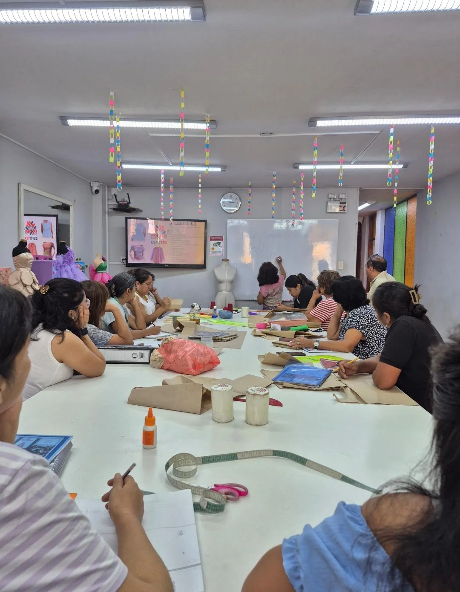

Desarrolla moldes base, transformaciones y escalado para crear prendas bien estructuradas y con ajuste profesional.
Este curso está dirigido a quienes desean dominar el patronaje en tela plana y de punto, transformando sus ideas en moldes precisos listos para confeccionar.
👉 No necesitas ser experto: aprenderás paso a paso desde toma de medidas hasta transformación y escalado.

En este curso aprenderás a construir prendas completas desde el molde base.
Haz clic en cada semana para ver las técnicas, trazos y contenidos específicos que aprenderás.
👕 Polo Básico y Cuello V:
👕 Manga Ranglan y Polo Dama:
🎽 Bividí Deportivo e Interior:
🧥 Polera Caballero y Dama:
👖 Pantalón Deportivo:
🧥 Casaca Deportiva:
👔 Polo Tipo Camisero (Box):
🩳 Prendas de Alto Rebote (Lycra):
👗 Body y Faldas:
👗 Trazado Superior Femenino:
👖 Pantalón Casual Tela Plana:
👔 Camisería Profesional: